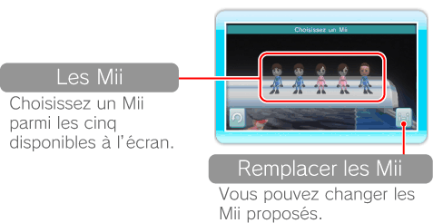
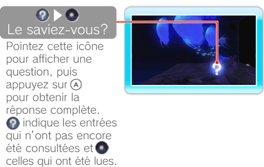

14 |
Nager avec un Mii |
 |
|
Pointez
 pour afficher cinq Mii parmi ceux ayant été sauvegardés dans la mémoire de la console Wii. pour afficher cinq Mii parmi ceux ayant été sauvegardés dans la mémoire de la console Wii.Note: vous pouvez créer des Mii dans la chaîne Mii. Pour plus d’informations sur la création de Mii, veuillez vous référer à la section “Chaîne Mii™” du mode d’emploi Wii – Chaînes et paramètres.

Pointez un Mii et appuyez sur
. Les Mii disponibles peuvent inclure des Mii créés aléatoirement.
Après avoir sélectionné un Mii, vous pourrez nager avec lui dans l’aquarium. Votre Mii peut également nourrir les poissons et découvrir des informations supplémentaires sur chaque espèce.

Note: les Mii suivent un chemin prédéfini et ne peuvent pas être dirigés par le joueur.
|
 pour cesser d’observer l’intérieur de l’aquarium et reprendre la nage.
pour cesser d’observer l’intérieur de l’aquarium et reprendre la nage. |
 |
 |